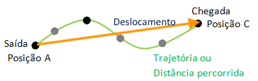

Obs: Este site foi dedicado para o entendimento dos significados de cada termo em física, esse foi feito particularmente para conceitos de cinemática.
Muitas pessoas podem achar que deslocamento e distância são a mesma coisa, porém, há diferença. E é sobre isso que vamos falar a partir de agora.
Deslocamento é o quanto uma partícula A se distânciou do seu ponto de origem (Sendo o ponto de origem de nome O). O que nos leva a crer que o deslocamento é igual a diferença de pontos finais e iniciais.
Portanto, podemos usar a fórmula: ΔX = Xf - Xi
A distância percorrida é o tanto que uma partícula andou ou se movimentou desde o ponto inicial até o ponto final, ou seja, o quanto a partícula caminhou.
Para saber a distância feita por tal corpo, podemos assumir a fórmula: D = |df| + |di|
Suas respectivas unidades internacionais é o Km, logo temos [D] = m e [Δ] = m
O tempo pode ser definido como o quê afinal? Bem, o tempo resumidamente seria a duração de algo, seja ela contínua ou com desfecho.
Para uma explicação melhor e com aprofundamento sobre a passagem do tempo e o que seria o tempo deveríamos saber ondulatória, por isso vamos deixar esse assunto para outro momento.
Mas então o que devíamos nos preocupar? De maneira simplificada somente com as unidades uilizadas para o tempo, conversão de unidades temporais e os contextos inseridos
Por exemplo, quando jogamos pique-esconde usamos segundos para saber o quanto precisamos contar até um certo valor.
O tempo nos ajuda a compreender os instantes inseridos de algo.